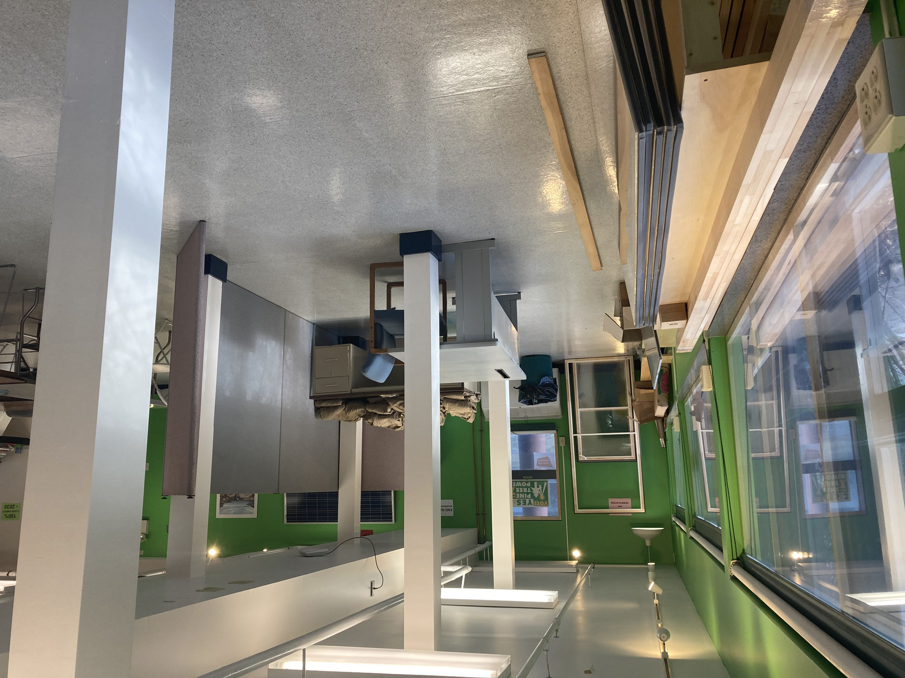

About
This program
The Community Energy Center at College of the Atlantic in Bar Harbor recently received a grant from the U.S. Department of Energy to make home energy improvements more accessible in Downeast Maine. Our process begins with an in-depth assessment of a home to identify the most cost-effective upgrades to improve comfort and energy efficiency. For homeowners who want to make upgrades, the team can coordinate with contractors to reduce hassle and costs.
In addition to the assessment team, we have a data science team that can quantitatively analyze the benefits provided by the installed upgrades. For a limited number of homeowners, the data science team can also measure air quality contaminants using wifi-enabled monitors and conduct before and after monitoring of energy upgrades.

Local background
Maine is the most heating oil dependent state in the country, with 58% of homes using fuel oil as the primary source of heat. In recent years, we have spent more than $4 billion annually on fossil fuels, resulting in more than 6% of the state’s GDP being spent on energy imports. In the last few years, heating oil and kerosene prices doubled from $2-$3/gallon to $5-6/gallon, and stayed above $4/gallon for the entire year from March 2022 to 2023. At the same time, Maine’s electricity prices increased significantly, causing already high household energy costs to nearly double in the last few years.
To compound this issue, Maine has some of the oldest houses in the nation, meaning that many homes are poorly insulated. 56% of the houses in Maine were built before 1980, and most of the homes built since then are not well insulated either. In order to address these issues, Maine has a robust rebate program for energy and efficiency improvements and is developing related workforce training programs.
Contact Us
Have a question? Contact the project leads using the emails below:
David Gibson - COA Director of Energy
dgibson@coa.edu
Nicole Grohoski - Energy Project Manager
ngrohoski@coa.edu
References:
- EIA. https://www.eia.gov/state/data.php?sid=ME#ConsumptionExpenditures. Accessed on Feb 6, 2024.